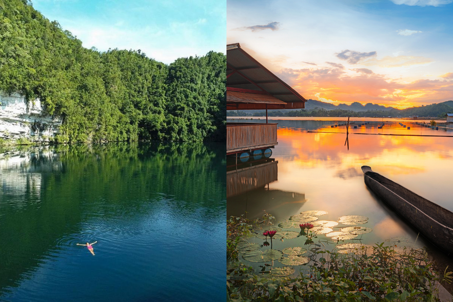
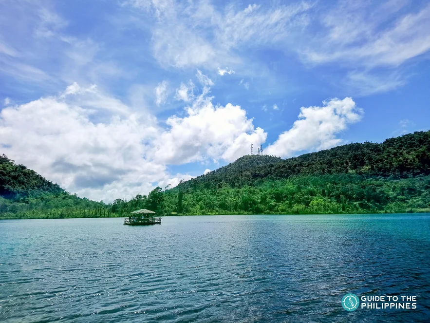
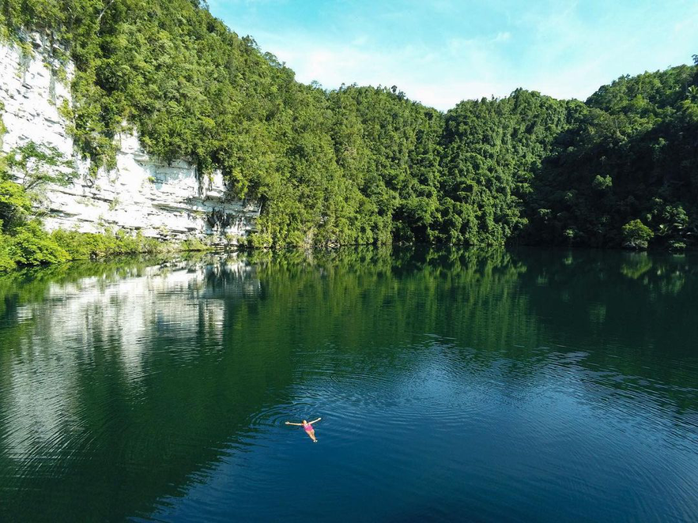
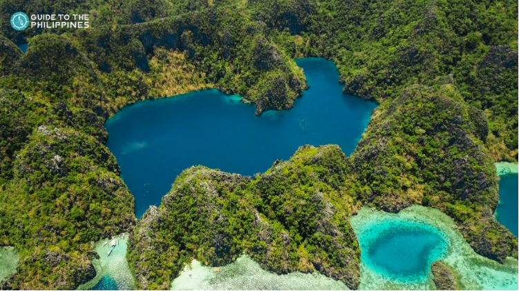
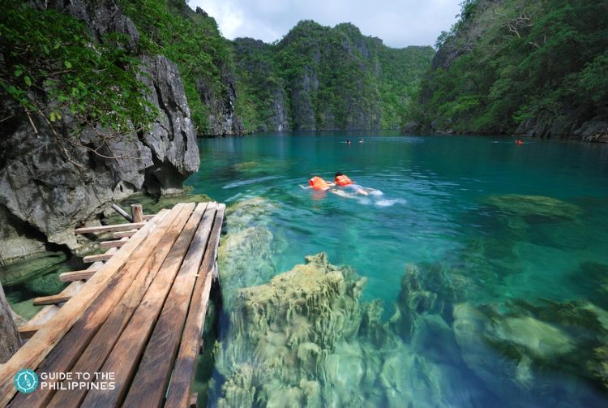
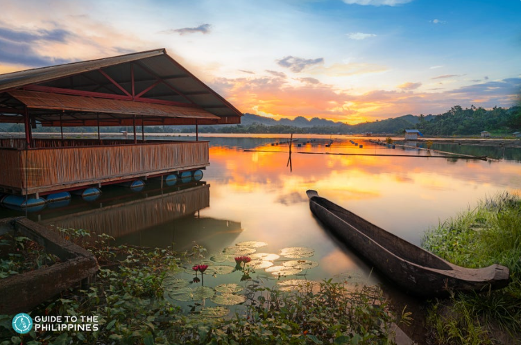

Lake Danao is one of several popular Visayas tourist spots in Leyte, an island facing the Pacific coast best known as the site of the largest naval battle in the second world war. Perched high up in the mountains of Ormoc City at 650 meters above sea level, the violin-shaped lake’s surrounding enjoys temperate weather that inspires cozy get-togethers along its scenic fringes. The 148-hectare lake is at the center of the 2,000-acre Lake Danao Natural Park.
Locally known as a lover’s lake, it is a source of potable water that provides an adequate supply to nearby townships. This eco-tourist park is the perfect spot for outdoor activities like hiking, trekking, biking, horseback riding. Along the lake’s perimeter are cottages and huts that visitors may rent during their stay. See more

An off-the-beaten-track destination for outdoorsy, adventurous types, Lake Bababu is in the Dinagat Islands, Surigao del Norte, an eco-tourism site in northern Mindanao. It is one of the most beautiful lakes in the country and is reachable by trekking through a 700-meter path with a steep, rocky trail in an unspoiled jungle. Two features set it apart from other lakes.
The first is that it is meromictic, meaning the lake comprises both fresh and saltwater without mixing, remaining separate all year round. The Philippines has only ten lakes of this type, and Lake Bababu is one of them. The second feature that makes it unique is its 650-meter underwater cave, one of the longest in the country. Divers enter from the lakeside on one end and then emerge to the saltwater sea on the other. See more

As one of the most famous lakes in the Philippines, Barracuda Lake on the northern coast of Coron island is a permanent fixture in many Coron tour packages. With its pristine blue water set against imposing karst formations, it cuts a striking image that draws tourists in Coron tours all year round. Locally referred to as Luluyuan Lake, visitors reach the water’s edge by walking through a wooden walkway suspended over the lake.
The lake is named after a barracuda skeleton, although sightings of the fish are scanty. Instead, divers are after the abrupt water temperature change between the upper and lower gradient in what is known as a thermocline. The top of the lake starts from 28 degrees Celsius and then drastically drops to 38 degrees upon reaching the 14-meter mark. It is also a halocline lake where the water changes from freshwater to saltwater near the bottom. See more

Another popular tourist site featured in many Coron private tour packages, Kayangan Lake is one of the most beautiful lakes in the Philippines. And as one of the most famous lakes in the Philippines, tourists join the Kayangan Lake Coron tour to see its towering limestone cliffs and immaculate turquoise blue water. It is an enchanting sight to behold, one that has inspired many picture-perfect postcards, although nothing beats seeing it first hand.
The famous viewpoint shows a breathtaking vista of Coron bay and its imposing rock formations. Swim beneath its pristine water and see the limestone cliffs from a different vantage point, or enter the narrow entrance of a nearby cave for another view of the lake. Bring snorkeling gear to see the marine life underwater. If you'd rather not swim, you can still see some of it because the water is so clear it's visible from the surface See more

This prime ecotourism destination is in South Cotabato, a mystical island in the southern part of Mindanao. Tucked within a 42,450-hectare forest, Lake Sebu has lush agricultural land and an aquaculture plant where tilapia thrive in the tranquil lake.
It is known as the land of dream weavers, named after the resident T’boli women who create handwoven native cloth patterns called T'nalak that appear in their dreams. The highly regarded T'nalak pattern is unique, with no two ever alike. See more